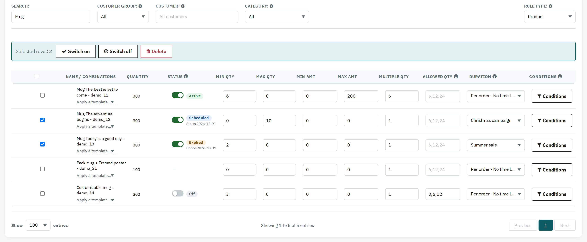

The Status column says what the cart does with each rule right now:
| Status | Meaning |
|---|---|
| Active (green) | The cart applies the rule now. If its Duration Rule has an end date, it is shown below as Until <date>. |
| Scheduled (blue) | Its Duration Rule starts later (Starts <date>). Until then the next rule in line applies. |
| Expired (amber) | Its Duration Rule has ended (Ended <date>), so the rule no longer applies. Edit the Duration Rule to set new dates. |
| Off (grey) | Switched off in this table. The cart ignores the rule, but its values are kept, so switching it back on restores it exactly. |
Use the switch in the Status column to turn one rule off or on. Editing a rule that is off keeps it off. Tick the boxes in the first column (or the box in the header, for every row on the page) to Switch on, Switch off or Delete several rules at once from the bar above the table. Deleting asks for confirmation and cannot be undone.

Rules in each state, with two rows ticked for a bulk action.
If a rule's Duration Rule is switched off or deleted, the rule stays Active and applies to every order; an ⓘ icon next to Active says so.